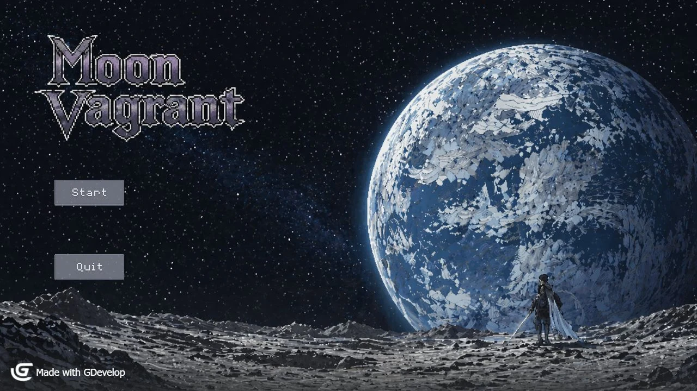
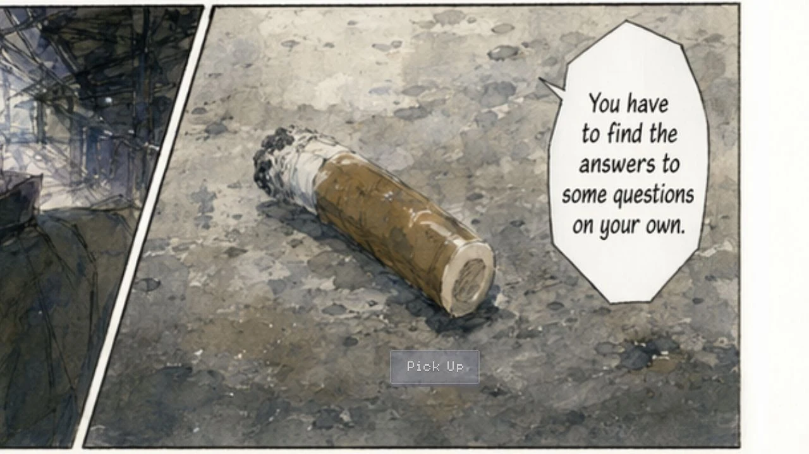
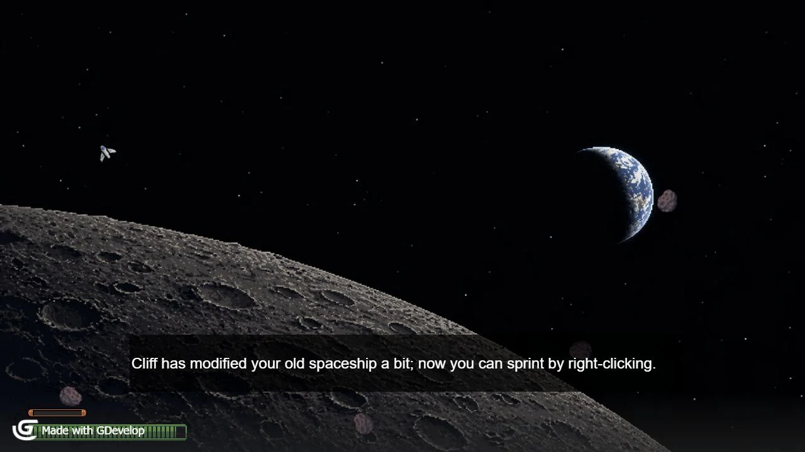

Move & evade
Read incoming threats and use sprint to change position.
A small ship. A crowded sky.
PLAYABLE PROTOTYPEPROTOTYPE STILLS
PLAYABLE PROTOTYPE
BROWSER PREVIEW
Desktop mouse and keyboard required. About 25 MB loads when you choose Play. This preview keeps sound effects and omits background music.
Click the game to focus. Choose Start, click to reveal the comic, then press Space or scroll to advance and select the final button. In combat: mouse to move, left click to shoot, right click to dash. Escape or Exit game closes the preview. Leaving the game pauses it.
To hear effects, enable Sound, then click inside the game. Touch controls are not adapted; use a desktop browser.
01 / THE IDEA
A 2D space shooter built around movement, pressure and limited resources.
Pilot a small spacecraft through asteroids and enemy fire. Mouse-directed movement and shooting work alongside sprint and shockwave abilities, while health, fuel and weapon heat create competing demands. A comic-style introduction leads into the combat encounter.
Read incoming threats and use sprint to change position.
Attack while keeping track of heat, health and movement resources.
Use shockwave to respond to pressure, then learn from the encounter.
CURRENT SCOPE
The browser preview and Windows export demonstrate a compact combat slice. Full multi-level progression, advanced upgrades and complete story delivery are outside this prototype’s scope.
02 / MY CONTRIBUTION
I developed the concept and prototype scope, implemented the game in GDevelop, prepared playtests, organised observations and analysed the findings.
Implemented mouse-directed movement, shooting, sprint and shockwave interactions in the prototype.
Connected the title screen and comic introduction to the combat scene and resource feedback.
Identified improvements to onboarding, resource HUD, ability feedback and boss pacing. These are iteration proposals, rather than verified completed changes.
03 / A CLOSER LOOK
Select an image. Take a closer look.


Built with GDevelop. These screenshots show the exported prototype and its existing artwork; the GDevelop watermark is retained. The development contribution described here does not claim authorship of every illustration or audio asset.
BACK TO THE COLLECTION